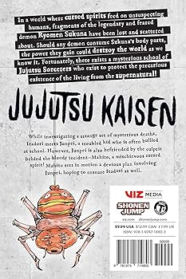

Cover Info
Character: Satoru Gojo
Theme: Cursed Energy
Vibe: Dark / Action
Click the book to flip it.
Summary
Jujutsu Kaisen Volume 4 continues the Kyoto Goodwill Event, where the friendly competition between Tokyo and Kyoto Jujutsu High turns into a real battle after curses invade. Yuji Itadori surprises everyone by revealing he is still alive and ends up fighting alongside Aoi Todo, who quickly takes a liking to him and helps train him mid-battle. Together, they face the powerful cursed spirit Hanami, while other students like Megumi Fushiguro, Maki Zenin, and Toge Inumaki battle enemies across the area. As the fights intensify, Yuji improves his control of cursed energy, showing clear growth as a sorcerer, and it becomes obvious that the attack is part of a larger plan by stronger villains, shifting the event from a simple school competition into a dangerous turning point in the story.
Where to Buy
Amazon, Barnes & Noble, local bookstores, or libraries.
Arc
Small Fry and Kyoto Sister School Battle Event